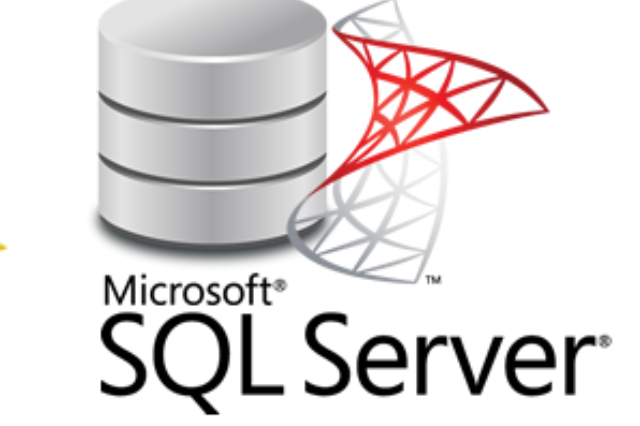

SQL SERVER
Banco de Dados
O SQL Server, criado pela Microsoft, é muito conhecido e utilizado no mercado. A linguagem usada nessa erramenta é o T-SQL, e oferece recursos avançados e diferenciados para facilitar a atualização de dados e o armazenamento das informações de forma segura e confiável.
O SQL Server atua com sistemas integrados de criptografia, permitindo que a visualização ou alteração das informações sejam feitas apenas pelas pessoas responsáveis, o que garante ainda mais segurança e tranquilidade para os usuários e empresários.
É uma alternativa comumente utilizada em lojas online, instituições governamentais, bancos e indústrias dos
mais diversos portes.